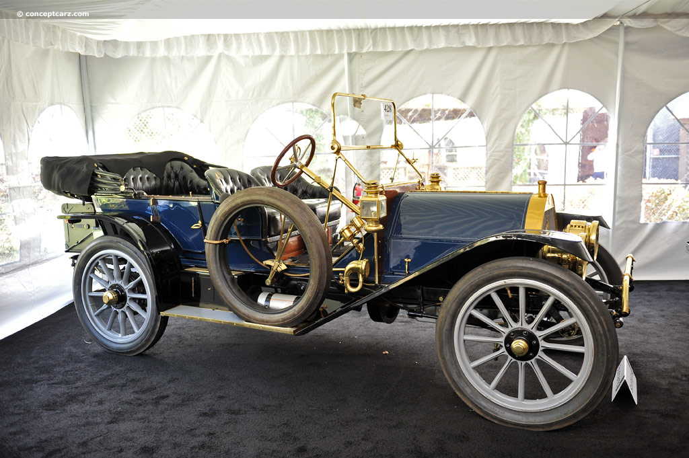

Седан
Седан — триоб'ємний кузов легкового автомобіля з двома або трьома рядами 2 або 3 сидінь, з чотирма дверима і багажником, структурно відокремленим від пасажирського салону. Схожий на хетчбек, але з більшими габаритними розмірами та збільшеним простором багажника. Заднє скло у седані завжди жорстко закріплене в рамці і не піднімається, хоча спинка заднього сидіння може бути або обладнаною лючком, або відкидатися для перевезення довгих предметів. Однак 4-дверні седани вищі за 5-дверний мінівен, 5-дверний хетчбек, 5-дверний SUV або 5-дверний універсал і 4- Дверні LWB седани вищі за 5-дверний LWB мінівен, 5-дверний LWB хетчбек, 5-дверний LWB SUV або 5-дверний LWB універсал. Варіанти стилю седана включають седан з щільним зчепленням, клубний седан, седан-кабріолет, седан фастбек, седан з жорстким дахом, седан із кузовним верхом і седан.
Походження назви
Щодо походження терміна існують дві версії. Одна пов'язує його з англ. sedan («паланкін»), що походить з південно-італійського діалекту від слова sedia — «крісло» (перший седан було представлено в Неаполі). За іншою версією, слово «седан» утворено від назви французького міста Седан, що спеціалізувалося в XIX столітті на виробництві дорожніх карет. Першим автомобілем, на чотирьох осіб, який отримав ім'я «седан» був Speedwell Sedan, розроблений у 1911 році компанією Speedwell Motor Co в Огайо.
